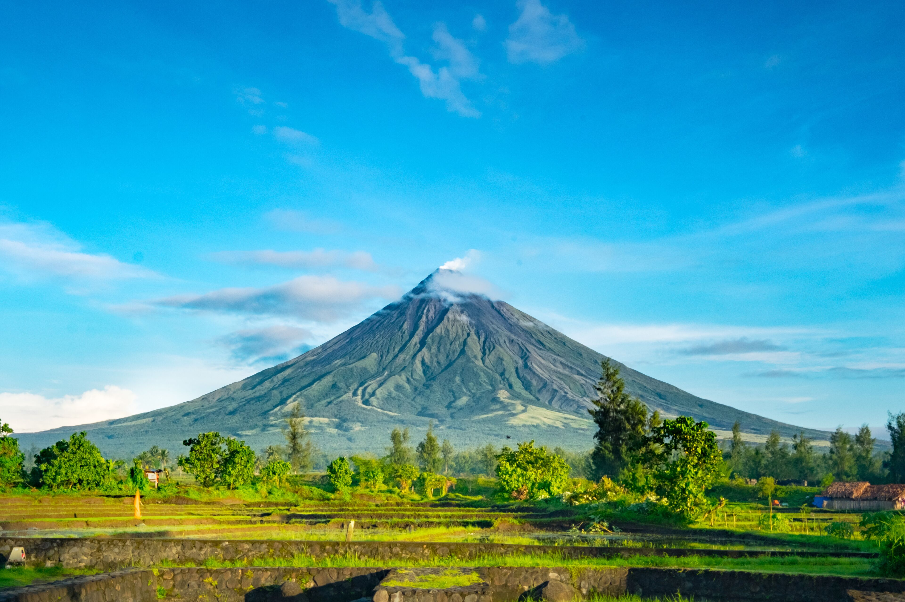
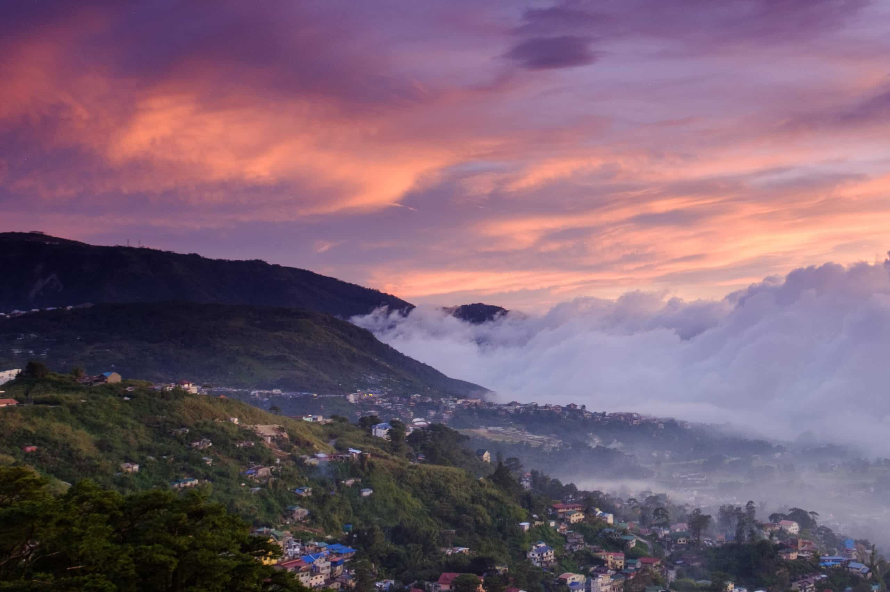
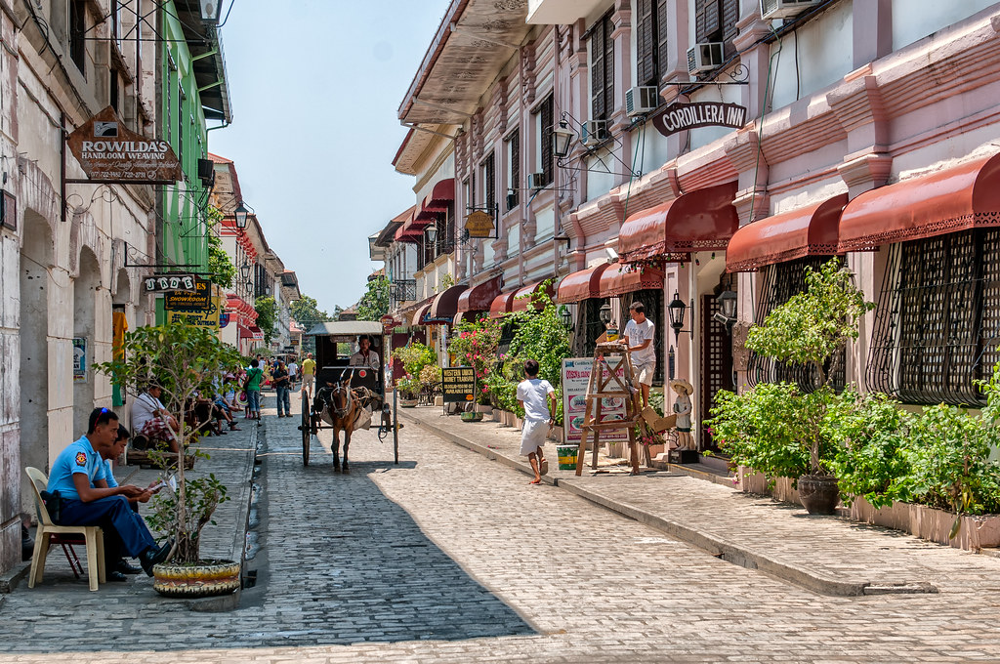
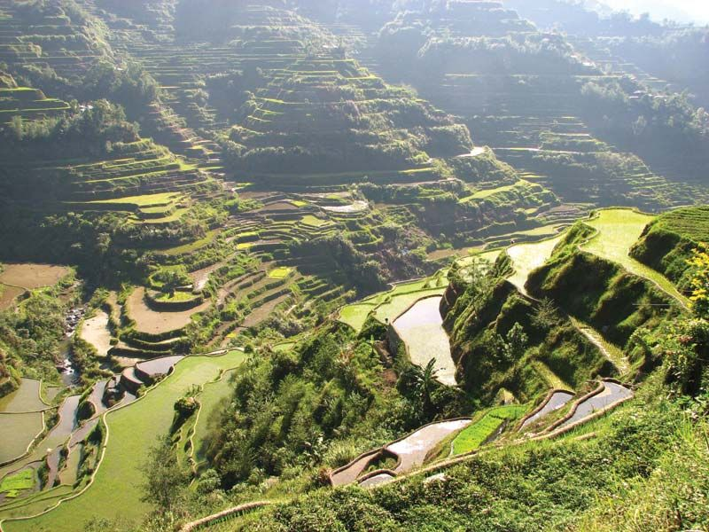
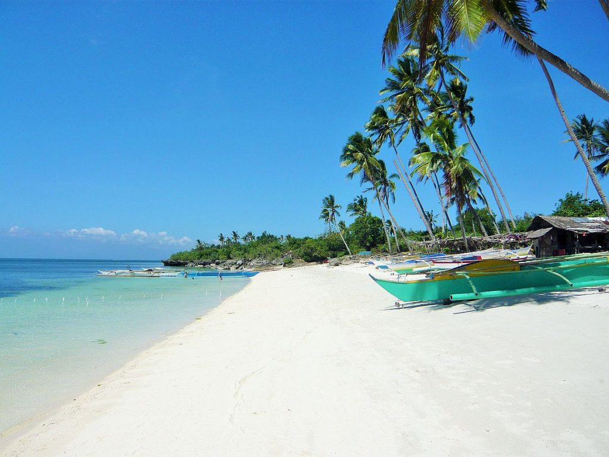
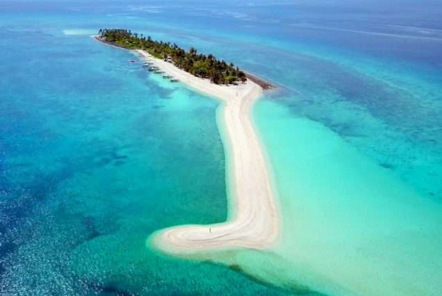
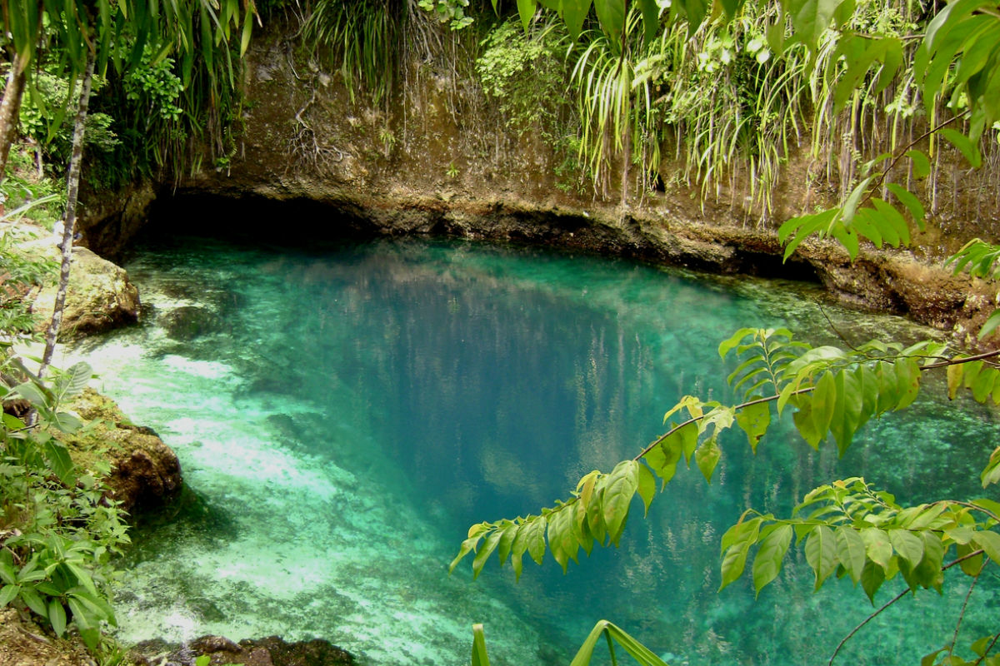
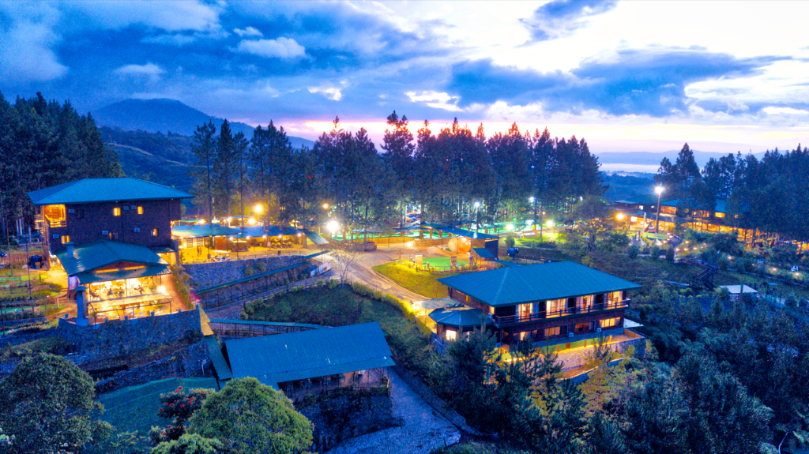

Home Place Food
LUZON
 Location: Mayon Volcano,Albay Province Description:An Active Stratovolcano In Albay Philippines |
 Location: Mirrador Hill, Baguio CityDescription: Mirador Hill is a 5-hectare sacred landscape and tourist destination in Baguio City, Philippines. |  Location:Intramuros,
Location:Intramuros,Manila Description:Intramuros, known as the "Walled City," is the historic core and oldest district of Manila. |
 Location:Vigan,Ilocos SurDescription:Vigan is the capital of Ilocos Sur, Philippines, renowned as Asia's most intact 16th-century Spanish colonial town. |  Location:Ifugao ProvinceDescription:The Banaue and Batad Rice Terraces are spectacular 2,000-year-old mountain carvings located in Ifugao, Philippines. |
VISAYAS
 Location:Boracay Aklan,MalayDescription:Boracay is a world-renowned tropical island in the Philippines, famous for its 4-kilometer stretch of powdery white sand known as White Beach. |  Location:Kalanggaman Island Palompon, LeyteDescription:Kalanggaman Island is an uninhabited, 753-meter tropical sanctuary. Famous for its iconic, powdery white sandbars stretching into crystal-clear turquoise waters, it offers a serene escape. | .jpeg) Location:Chocolate Hills,Bohol
Location:Chocolate Hills,Bohol
Description:a famous geological formation in Bohol, Philippines, consisting of 1,260 to 1,776 conical mounds spread over 50 square kilometers. | .jpeg) Location:Magellan's Cross,Cebu City
Location:Magellan's Cross,Cebu City
Description:a historical Christian cross planted by Portuguese and Spanish explorers led by Ferdinand Magellan upon arriving in Cebu on April 21, 1521 | .jpg) Location:Daranak Falls in Tanay, Rizal,
Location:Daranak Falls in Tanay, Rizal,
Description:Daranak Falls is a breathtaking 14-meter (46-foot) waterfall in Tanay, Rizal, Philippines. |
MINDANAO
 Location:Bohol Sea Northern Mindanao
Location:Bohol Sea Northern Mindanao
Description: a pear-shaped, volcanic island province in the Philippines' Bohol Sea, just off the northern coast of Mindanao. |  Location:Surigao del SurDescription: a deep, crystal-clear spring river in Barangay Talisay, Hinatuan, Surigao del Sur, Philippine |  Location:Dahilyan Forest Park,Manolo Fortich BukidnonDescription:Dahilayan Forest Park is nestled at the foot of Mount Kitanglad 4,700 ft. above sea level. Forest Park was built with the vision of helping develop the tourism industry in Bukidnon and the whole Philippines as well. |  Location:Siargao Island,Surigao del Norte
Location:Siargao Island,Surigao del Norte
Description: a tear-drop shaped island in the Philippine Sea, globally renowned as the country's surfing capital. | .jpeg) Location:Tinuy-an Falls in Bislig, Surigao del Sur
Location:Tinuy-an Falls in Bislig, Surigao del Sur
Description: a majestic multi-tiered waterfall known as the "Little Niagara of the Philippines". |